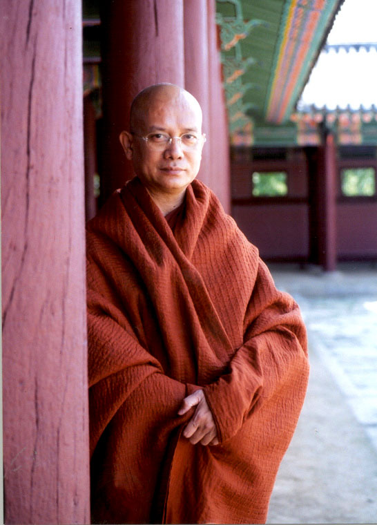
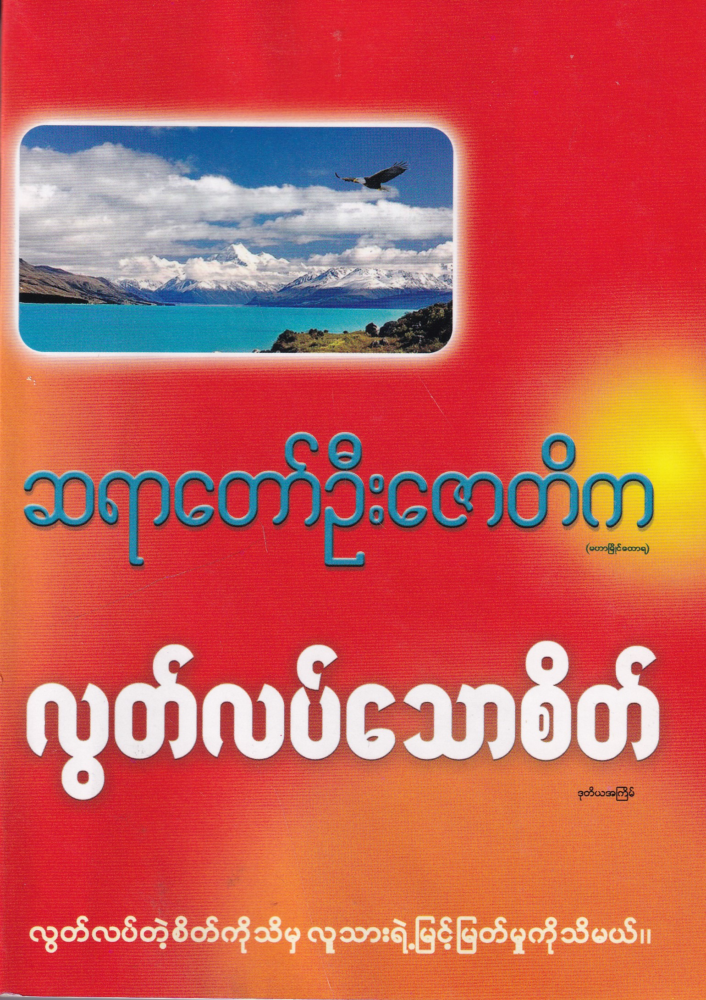
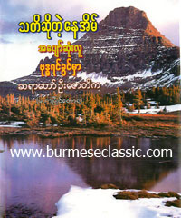

|  | Name | Sayadaw U Jotika |
|---|---|---|
| Burmese name | ဆရာတော်ဦးဇောတိက | |
| Nationality | Shan | |
| Religion | Buddhist | |
| Occupation | Engineer,Writer and Monk | |
| Birth-date | August-5, 1947 |
Biography
Born into a non-Buddhist family in Moulmein, Myanmar (Burma) on August 5, 1947. His parents were U Sattar and Daw Tin. He received his basic education at a Roman Catholic missionary school. During his younger days, he didn't believe in any organized religion although he studied and exposed himself to many different religions, as well as western philosophy and psychology. He graduated as an Electrical Engineer in 1973 from Rangoon Institute of Technology. He became very interested in Buddhist meditation. He discovered that life was unsatisfactory and majority of the people devoted their precious time mainly in gathering wealth, enjoying sensual pleasures, fame, power and position. Thus, he decided to leave behind his family and became a "Samenera" (Novice) at the age of 26. He was ordained as a "Samgha" in 1974 at Taung Pu Lu Tawya, Meiktila with Ven. Taung Pu Lu Sayadaw as his preceptor. He practiced meditation under the guidance of the late Ven. Taung Pu Lu Sayadaw for (3) years. He continued to practice meditation with Htantabin Tawya Sayadaw for (15) years. Ven. Jotika visited Melbourne in 1977 and again in 1998. He was in the United States in 1983-84 for about (16) months, conducting Dhamma talks in Santa Cruz, New York, Boston and Washington. He had visited Singapore several times on Dhamma Duta missions as well. He has established a monastery in a rural environment overlooking a great lake near Pago, (50) miles north of Yangon. His Dhamma talks and books are in great demand in Myanmar as well as with overseas Burmese. He has published about (13) titles so far. One of his popular Dhamma book in English is "Snow in the Summer"
Favourite quotes
We don't know anything for sure, |
To forgive is to understand. |
| Book | Release-Year | Download-link | Book | Release-Year | Download-link |
|---|---|---|---|---|---|
 |
September-1, 2012 | Dealing with negativity |  | September,2013 Second edition |
Free mind |
 |
September, 2013 | life is a school |  |
January-1, 2005 | Map of the Journey |
 |
1998 | snow in the summer |  | October,2007 | သတိဆိုတဲ့နေအိမ် |
©Copy from www.buddhanet.net and www.dhammadownload.com,www.mmbookshop.com